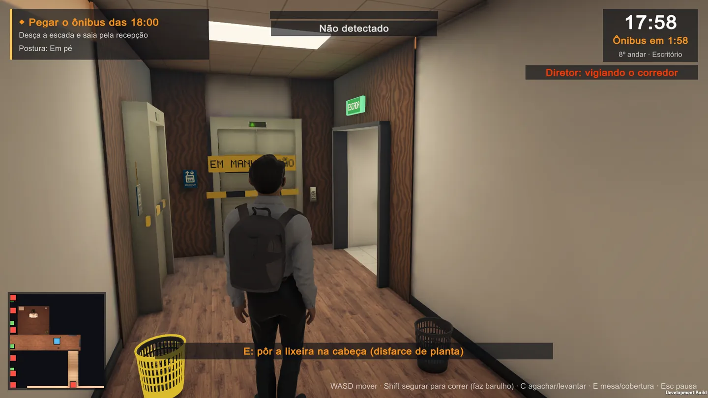
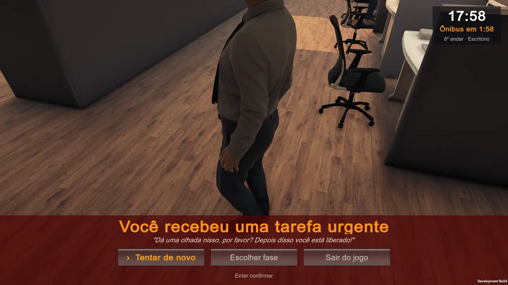

P—01 · Jogo indie · Em desenvolvimento
Escritório 17h58
Comédia de furtividade sobre a hora de ir embora


São 17h58. O ônibus sai às 18h. Saia da mesa até a porta antes que um gerente te passe só mais uma tarefinha
.
Uma comédia de furtividade em terceira pessoa sobre os dois minutos mais perigosos do expediente. Gerente fazendo ronda, colega dedando, elevador quebrado.
Projetamos e construímos tudo de ponta a ponta — gameplay, IA, trilha adaptativa, localização e um pipeline de build multiplataforma — e estamos preparando o lançamento na Steam, para PC.
Página na Steam — em breve Política de privacidade
- Gênero
- Furtividade · Comédia
- Engine
- Unity 6 · URP
- Plataforma
- PC · Steam
- Builds de teste
- macOS · Linux · Android · iOS — experimentais
- Idiomas
- 7
- Fases
- 4 × 2 minutos
- Trilha
- 5 conjuntos adaptativos, do punk ao 8-bit
- Status
- Preparando para a Steam